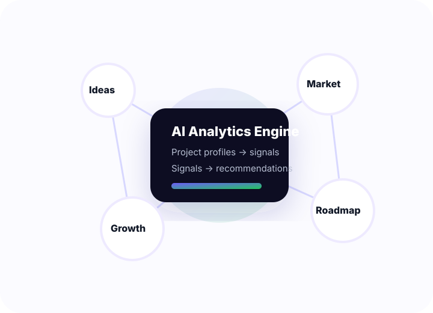

AI Analytics
AI analytics for startup development.
Snoubolr uses AI to analyze project ideas, startup profiles, founder goals, and community feedback. The goal is to help builders understand their project, improve the MVP roadmap, and connect with the right people.

Analytics workflow
How our AI turns startup data into useful direction.
Instead of only storing project profiles, Snoubolr is designed to actively analyze them and generate signals that help founders decide what to build, who to talk to, and where their project can grow.
Understand the idea
AI reads the project description and identifies the problem, audience, industry, technology, and stage.
Extract project signals
The system creates structured tags, similarity vectors, collaboration needs, and growth indicators.
Recommend next steps
AI suggests relevant founders, similar startups, communities, and potential development directions.
Measure progress
Feedback, engagement, and matching quality become analytics for improving the project over time.
Project development
AI helps founders move from idea to MVP.
Snoubolr is built to support early project development. The platform can help organize ideas, understand market positioning, identify missing skills, and suggest practical MVP milestones.
- AI-generated development milestones and validation steps.
- Project clarity analysis: problem, audience, offer, differentiation.
- Technology and skill gap detection for product development.
- Recommendations for founders, developers, designers, and advisors.
AI matching
Matching is based on meaning, not only keywords.
Two founders may describe similar ideas with different words. Snoubolr’s AI direction is to compare meaning, stage, audience, technology, and goals so the platform can surface relevant connections that ordinary search could miss.